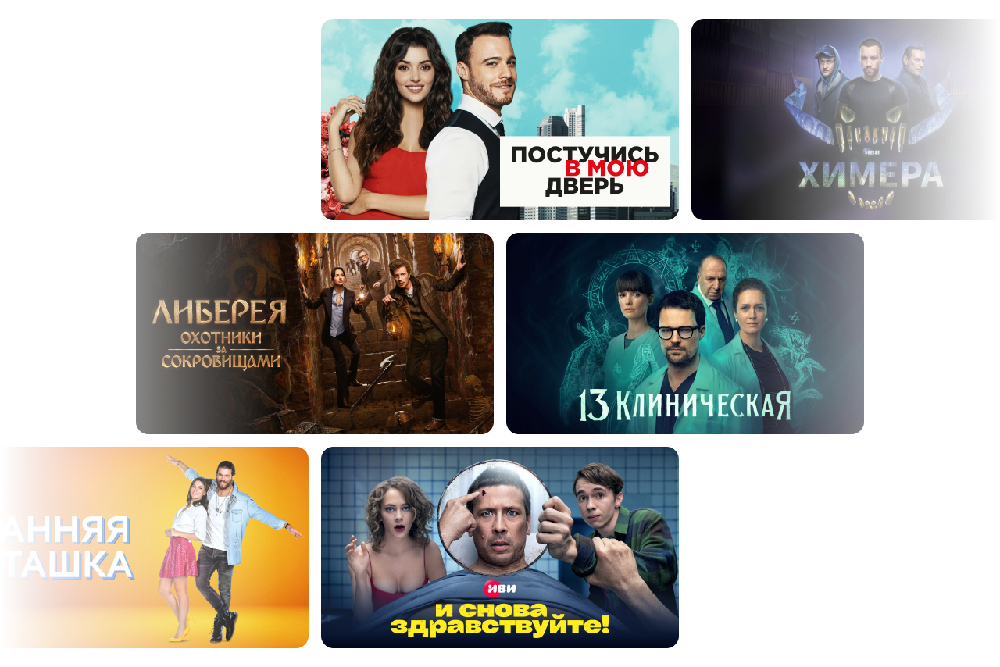
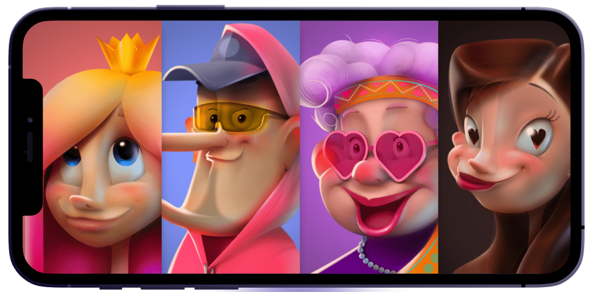
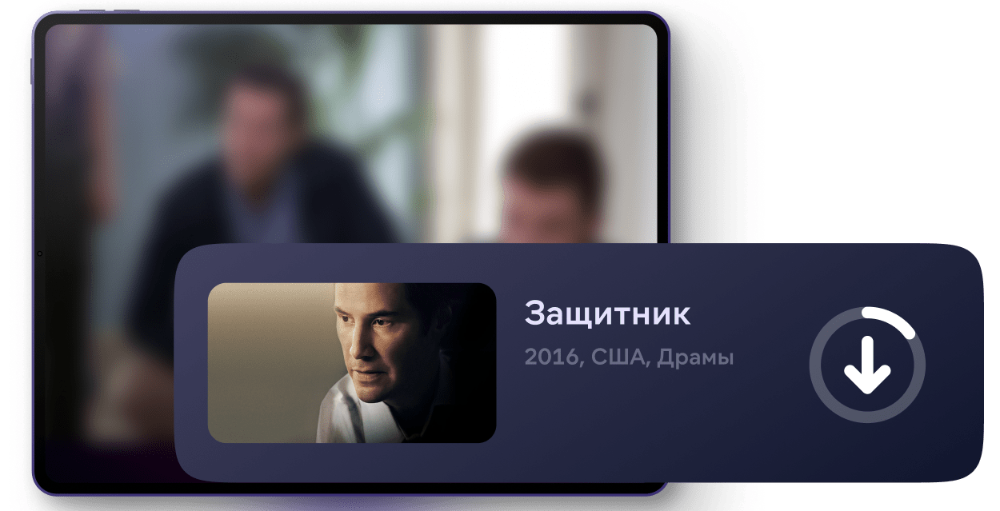
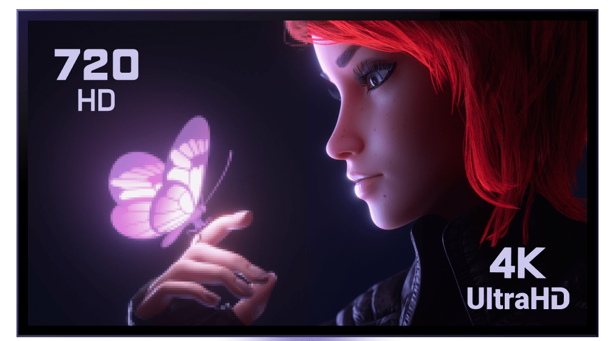

Подписка на онлайн - кинотеатр Афиша
О нас
Онлайн-кинотеатр стартовал в web-пространстве 19 февраля 2010 года и сначала был доступен только по
приглашениям в сервисе микроблогов Twitter.
26 февраля 2010 года сайт открылся
для свободного доступа. В первый день работы кинотеатра сайт посетили более 180 тысяч человек, что
сделало его запуск одним из самых успешных в истории российского интернета. На сегодняшний день
онлайн-кинотеатр остается основным проектом компании kino, привлекая около 33 миллионов посетителей в
месяц. Контент кинотеатра доступен на интернет-сайте www.kino_afisha.ru, на мобильных платформах (iOS,
Android,
Samsung Bada, Windows Phone 7/8, Symbian), на телевизорах с выходом в интернет, продающихся в России таких
марок как Samsung, LG, Philips, Toshiba, Sony и Panasonic, а также на ряде других устройств.
Онлайн - кинотеатр открывает для людей многообразие мира кино. Здесь вы можете посмотреть как
полюбившиеся с детства фильмы и мультфильмы, так и последние новинки.
Помимо кино специально для наших зрителей мы собрали коллекцию лучших отечественных каналов. Вы сможете смотреть любимые передачи в прямом эфире. Любите ли вы спортивные передачи, смотрите ли новинки документального кино, ждёте новые серии захватывающего сериала, хотите подобрать интересный мультфильм для ребёнка, а может быть, активно следите за новостями мировой политики или же ищете лучшие комедийные шоу? Программы и передачи на любой вкус вы найдёте на сайте онлайн-кинотеатра Афиша в разделе ТВ.
Преимущества
-
уникальная рекомендательная система, учитывающая ваши предпочтения и предлагающая посмотреть именно то, что точно придется вам по душе;
 -
просмотр в одно касание на любом из устройств, подключенном к вашему аккаунту – от смартфонов до телевизоров с технологией Smart TV;
 -
возможность скачивать в память мобильного устройства лицензионный контент и смотреть его без доступа к Интернету;
 -
уникальные условия и преимущества для обладателей подписки, делающей кинопросмотр комфортным и приятным;
-
просмотр онлайн контента хорошего разрешения без регистрации и смс.

Отзывы

Отзыв: Афиша - бесплатные фильмы и онлайн-кинотеатр - Где посмотреть кино
01.01.23
Достоинства:Богатая видеотека, удобный интерфейс
Недостатки:
Нет
Смотрю кино на видеоревисе Афиша уже много лет.
Телевизионного кабеля у нас нет, смотрим только кино, сериалы и мультфильмы. И из множества
видеосервисов
смотрю только Афиша. Он самый удобный, фильмы хорошего качетва и большой выбор. Выбор дейтствительно
хороший,
чего только стоит отменная подборка зарубежного и отечественного артхауса. Но есть не только артхаус, но
и
классика.
Конечно не все фильмы можно посмотреть бесплатно, и даже не все по подписке. Некоторые приходится
покупать. Мы покупаем всегда по самой низкой цене - на один просмотр - примерно 100 рублей. Я не умею
скачивать с торентов. Да и не сторонник этого. Все же за фильм нужно платить. Мы же раньше брали в
видеопрокатах фильмы, платили за это деньги. Тут тот же принцып, тольуо в сто раз удобнее.
Бывает,
что есть не все фильмы - нет, например, мультфильмов Миядзаки. Но, как правило, если мы решили
посмотреть
какой-то фильм, он есть на ivi.
иногда, я смотрю сериалы, которые предлагает мне канал - лекгие,
российские. Так бы не стала смотреть, а раз можно фоном включить на телевизоре - то почему бы и нет.
Оплата
очень простая. По подписке списываются деньги с карты. Удобный интерфейс и удобный поиск. Раньше была
неудобная перемотка, теперь эта проблема решена. Так же в памяти сохраняются просмотренные фильмы. И,
при
включении, предлагается продолжить фильм смотреть с того места, на котором была остановка. Если начато
смотреть несколько фильмов, то они все остаются в памяти.
При нажати на фильм, можно почитать
описание - не всегда корректное. А так же видеосервис предалгает подобные фильмы. Так же все фильмы
рассортированны - подборки разные, по любым параметрам можно искать.
Единственное, может ни с
того,
ни с сего выключиться. Приходится ждать, пока перезагрузится по новой. Но у меня и моих детей с
терпением
все в норме, поэтому для нас это - просто незначительная неприятность
| Время использования: | 7 лет |
| Год пользования услугами: | 2023 |
| Общее впечатление: | Где посмотреть кино |
| Рекомендую друзьям: | ДА |

Отзыв: Афиша - бесплатные фильмы и онлайн-кинотеатр - Альтернатива скачиванию фильмов
01.12.22
Достоинства:Много фильмов и сериалов, можно выбрать качество, не тормозит.
Недостатки:
Пока не обнаружила
Когда-то мы покупали видеокассеты, затем диски, потом начали скачивать торренты, а теперь посмотреть
кино или сериал можно ещё и он-лайн кинотеатре.
Афиша - как раз такой он-лайн кинотеатр или видеосервис, как его еще называют.
Я в силу своей отсталости, об он-лайн кинотеатрах узнала от своей сотрудницы, которая очень
удивилась, что я все еще скачиваю фильмы на свой компьютер. Посоветовала мне несколько видеосервисов, в
том числе, и Афиша.
Я пользуюсь версией Афиша для Андроида. Очень удобно, особенно вечером, когда все
уже
спят, посмотреть какой-нибудь фильм. Никому не мешаешь, надела наушники и все.
Многие пугают этот
сервис за то, что новые фильмы там за денежку. Да, за просмотр блокбастера на Афиша нужно заплатить,
причём, цена сравнима с ценой билета в обычный кинотеатр. Но в тоже время, на Афиша много бесплатных
фильмов и сериалов. Смотреть - не пересмотреть.
Качество контента приличное. Причём, можно
выбрать - низкое качество, среднее, высокое или HD.
Фильмы на не тормозят. Я пользуясь дом.
ру, у меня там не самая высокая скорость интернета. Но Афиша у меня никогда не зависает.
На Афиша
можно зарегистрироваться, чтобы иметь возможность ставить в очередь фильмы или сериалы для просмотра, и
не искать из снова каждый раз. А можно и не регистрироваться, на бесплатный просмотр это не
повлияет.
В целом, я этим видеосервисом довольна.
| Время использования: | 5 лет |
| Год пользования услугами: | 2022 |
| Общее впечатление: | Альтернатива скачиванию фильмов |
| Рекомендую друзьям: | ДА |

Отзыв: Афиша - бесплатные фильмы и онлайн-кинотеатр - Хорошее приложение
01.02.2023
Достоинства:Хорошее качество фильмов, просмотр без рекламы.
Недостатки:
Нужно заранее отключить автоматическое продление, если приложение уже не интересно
Перед новым годом в одном из магазинов мне подарили сертификат на подписку Афиша бесплатно на 1 месяц с последующим платным автоматическим продлением. Качество фильмов неплохое, получила большое удовольствие от просмотра любимых фильмов и сериалов. Но нужно быть внимательным, если нет желания дальше пользоваться приложением, нужно заранее отключить на сайте или через техническую службу автоматическое продление подписки. Я это сделала через службу поддержки без проблем.
| Время использования: | 6 лет |
| Год пользования услугами: | 2023 |
| Общее впечатление: | Хорошее приложение |
| Рекомендую друзьям: | ДА |